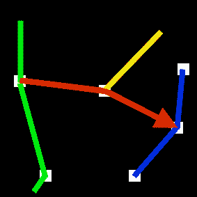
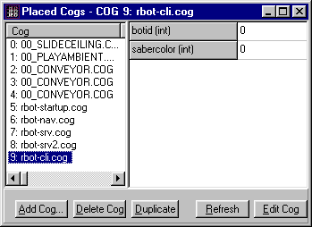

Last updated 1st July 2001
Welcome to part one of the Rbots tutorial. This tutorial will cover how to add 'Rbots' to a multiplayer level. Part two covers creating new bot characters. These tutorials cover both the Jedi Knight & Mysteries of the Sith versions of Rbots. As Rbots itself is still under alpha development, it is constantly evolving. This tutorial will also evolve to accomodate any changes.
In order to use this tutorial, you must have some basic experience using JED. Skills like adding things, aligning things to the grid, adding cogs etc. If you can handle these simple tasks, you will have no trouble adding Rbots to your level. There are other tutorials available to help you understand using JED itself.
Before we start, make sure you have a project directory set up. If you only have a 'gob' or 'goo' file of the level, extract it to a project directory using a program like Conman or CAGE. If you like, you can download the example project for JK here, and follow through each step of the tutorial. The example is before Rbots has been added.
Keep in mind, there are several limitations to what the bots can and cannot do. You will need to experiment and perhaps modify the level (architecture and cogs) to accomodate these limitations.
Get hold of the latest Rbots SDK for JK or MotS here, and unzip it over the top of your project directory replacing any files necessary. Once finished you should have the following files.
Jedi Knight
Mysteries of the Sith
Both versions
The Cog directory contains many cogs, but the only ones you need to concern yourself with at the moment are:The other cogs are discussed briefly in the appendix
Now that we have a rough idea of what each component does, let's put it all together. Open JED and load your level. Verify that the level works using the 'Save JKL & Test' facility, before proceeding.
First off, within JED, open up the 'Placed Cogs' window, click on 'Add Cog'. In the 'Resource Picker', select 'rbot-startup.cog' from the 'cog\' directory. If the file is missing, the SDK is not properly installed.
Once placed, there are some details we need to setup.
|
In order for the bots to find their way around your level, you will need to create paths for them to follow. The current path system is complex, but also very versatile. You can create paths that are unidirectional (one way), bidirectional (both ways), looping, with intersections, that join end-to-end and crossover points. The paths can also store information on what powerups are closeby.
Paths are set up by creating a series of ghost objects (path nodes) at regular intervals to form a path from one place to another. Rbots currently supports up to 100 ghost objects to use as path nodes. The example uses 10 paths with 10 path nodes each, but you can set this to anything you like as long as the total (paths * pathnodes) is less than or equal to 100. ie: 10 paths with 10 nodes each, 25 paths with 4 nodes each, 3 paths with 33 nodes each.
Here are some examples. The white squares represent path nodes with the different colour lines representing different paths.
Also, don't forget that you can use 3 dimensional paths - left, right, up and down.
Now it's time to add the paths to your level. You will need to experiment a little to get the feel about where to place the path nodes and how far apart they should be. It is better to use too many path nodes than not enough. With the current system, the bot has about 6 seconds to get from one node to the next. If the bot hasn't reached it's next path node by then, it will send out a 'I'm lost!' message and will be told to go to the closest node, and start from there. Place plenty of path nodes around, so the bot has 'reference' nodes for when it gets lost. Don't worry if this all sounds confusing, you should be able to work it out as you progress through this tutorial.
Have a look at your level and sketch out the most obvious paths. In our example level, there is a red path and a purple path forming a loop around the outside edge of the level, a blue path around the water where the shield pickups are, a green path around the catwalk, and a yellow path for a nice swim up to get the concussion rifle. There's a pink path to get the sequencer mines. We also have orange and cyan paths for all the other areas we want the bots to use.
 | |
The second shot of the yellow path above, is taken from the front view to demonstrate that it is indeed a 3 dimensional path. As you can see, we have already used 8 paths. It's usually a good idea to save a path or two for later experimentation. Using the guideline mentioned above, we can have up to 10 nodes to use with each path (10 paths * 10 path nodes = 100).
From within JED, change to 'thing mode'. Working from the largest path first, start placing ghost objects along it. Place them about 'head' height from the floor, as the bot will 'look' at the next node as it moves towards it. Placing it at floor height will make the bot look at the floor when it moves along the path, and placing it too high will make it look at the ceiling instead. Make sure that each node is within sight of the next.
The most important locations to place nodes are where the bots change direction and where other paths intersect it. Once these are done, continue placing the rest of the nodes in between. It is also perfectly fine to use any of the ghost objects already used in the level as path nodes. Place the nodes for each path, keeping a record of each ghost object's thing number, the sequence it is in along the path and what path it is located on.
For intersecting paths, the node will belong to both paths.
|
The blue path would have 66, 67, 68, 69 as nodes. |
A word of warning - don't use the actual powerups or walkplayer objects for path nodes. Weird things will start to happen, as these items are not static - they will move around the level. Instead just create ghost objects at similar positions.
Don't forget to place nodes near powerups if you want the bots to 'seek' them. You will need to specify the actual thing numbers of the powerups themselves later.
Also, if you place nodes underwater, you need to add the 'Thing Flags' value, and set it to '0x2000000' or just click on the 'Submerged' option.
We now have our paths laid out, and all we need to do now is tell the bots to use them.
Open up the 'Placed Cogs' window, click on 'Add Cog'. In the 'Resource Picker', select 'rbot-nav.cog' from the 'cog\' directory. If the file is missing, the SDK is not properly installed.
Once placed, we need to enter all the information we've just collected.
Anything not entered should be left at the default, which in most cases is '-1'. |
The first thing to enter is the pathsize, & numpaths parameters. In our example we have 10 paths with 10 path nodes each. Numpaths would be set to 10 and pathsize set to 10. In order to enter the actual path node numbers themselves, you will need to do some simple maths to work out which sections of the 100 path nodes available belong to each path.
Break up the total number of path nodes available by the number of nodes for each path you want to use. For our example, 10 paths with a path size of 10, use node0-node9 for the first path, and node10-node19, node20-node39, node40-node59, node60-node69 etc for the rest of the paths. If you wanted 3 paths with a path size of 33 nodes, use node0-32 for the first path, and node33-node65, and node66-node98 for the other 2. Get the idea?
Enter each path node for all of the paths, completing one before starting the next. It doesn't matter if you don't use all of the allocated space for each path, just fill in the extras with '-1' which is the default anyway. Keep in mind that you can move, add or remove nodes to improve the bot's gameplay later.
Once the nodes have been specified, we need to modify the 'inf0-inf9' parameters. These are special information parameters for each of the paths. There are 4 possible options:
In our example, the green path, and the yellow path, inf2 & inf3 are set to '1', as they are one way paths. The rest are set to the default '0' as they have no special considerations.
We now need to enter the thing numbers of the powerups we want the bot to seek. When faced with 2 intersecting paths, the bot will decide which way to go depending on what each path has to offer as long as there are path nodes near the powerups. The bot is also 'smart' enough to know not to seek a powerup if it's been taken and is waiting to respawn. If you don't enter the powerups here, all it means is that the bot will not seek them, but will still happily pick them up if it runs nearby.
That's it! You've just completed the most complex part of the tutorial. The rest is quite simple. All that's left is adding the actual bots themselves.
Now comes the fun part, adding all the bots. As mentioned above, the actual bot code itself is divided into two 'server' components and a 'client' component. You must have one of each of these for each bot you wish to add to the level.
Open up the 'Placed Cogs' window, click on 'Add Cog'. In the 'Resource Picker', select 'rbot-srv.cog' from the 'cog\' directory. If the file is missing, the SDK is not properly installed.
Once placed, we need to enter some information.
|
First off, we need to give the bot an unique number to identify it. This is set by 'botid'. It is important that the bots have sequential numbers. The first bot needs to be '0', the next '1', the one after that '2', etc.
To choose a name for the bot, open up the 'cogstrings.uni' file from the 'misc' directory in a text editor. Here's a snippet:
"COG_01000" 0 "Yun"
"COG_01001" 0 "Sariss"
"COG_01002" 0 "Jerec"
Use '0' for the name 'Yun', '1' for 'Sariss' and '2' for 'Jerec'. You can use any name in the COG_01000 range (1000-1999), making sure that the number exists and has a name next to it in the 'cogstrings.uni' file.
For teamplay, set the 'team' parameter to a number between 1 & 4, if you want human players to be able to join the team, or anything else for a 'bot only' team. If the 'teams' parameter for 'rbot-startup.cog' is set to 'no', it doesn't matter what setting you use here.
Double-click on the box next to 'rtemp' to select the template you want to use for the bot. In the 'Resource Picker', under 'Templates', scroll to the end of the list. You can choose from any of the templates starting with 'rbot_' for the bot to use. Feel free to use the 'Show 3DO Preview' checkbox to see what the bot will look like. If there are no templates starting with 'rbot_', the SDK is not properly installed.
Open up the 'Placed Cogs' window, click on 'Add Cog'. In the 'Resource Picker', select 'rbot-srv2.cog' from the 'cog\' directory. If the file is missing, the SDK is not properly installed.
Once placed, we only need to enter one parameter.
|
Open up the 'Placed Cogs' window, click on 'Add Cog'. In the 'Resource Picker', select 'rbot-cli.cog' from the 'cog\' directory. If the file is missing, the SDK is not properly installed.
Jedi Knight
Once placed, we need to enter some information.
|
Mysteries of the Sith
Once placed, we need to enter some information.|  |
|
Continue adding bots to your level using the 3 cogs 'rbot-srv.cog', 'rbot-srv2.cog' & 'rbot-cli.cog' for each bot, until you have the number of bots that you entered for the 'maxbots' parameter in the 'rbot-startup.cog'. In our example we have 4 bots in total.
Here's what our finished 'Placed Cogs' window looks like:
Notice there are 3 cogs for each bot. All with matching 'botid' numbers. The numbers must be sequential, starting from '0' and counting upwards, and not missing any numbers. This is important for the 'Add bot' feature to work correctly. You will also notice two extra cogs at the end of the list. The 'rbot-special.cog' allows the bots to use advanced features and will be explained in a future tutorial. The 'rbot-lightning.cog' is a custom lightning trap cog for Canyon Oasis, allowing the bots to activate the trap.
If your level is set up for teamplay, it is also important to add each bot to each team in turn. For example, for a 2 team level, add one bot to the red team, add the next bot to the yellow team, add the next bot to the read team again and so on. This is also for the 'Add / Remove Bot' feature to work correctly. It will add bots from one team and then the next, rather than removing all bots from just the one team.
Your level is now 'Rbots' ready. You will need to spend some time tweaking the various parameters of the cogs, and experimenting with the placement of the path nodes to get the best performance out of the bots. You can also download our finished example for JK here, to see how things all fit together. Enjoy!
These other files are used automatically by the rbots code. Here's a very brief description: